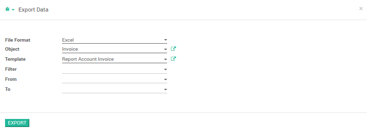

2
Go to Export Data menu > export data
Export Your Report Template
File Format
: You can choose EXCEL or CSV Format
Object
: Choose Model you want to export
Template
: Choose report template
Filter
: Add filter you want to add
From
: Start date report
To
: End date report
